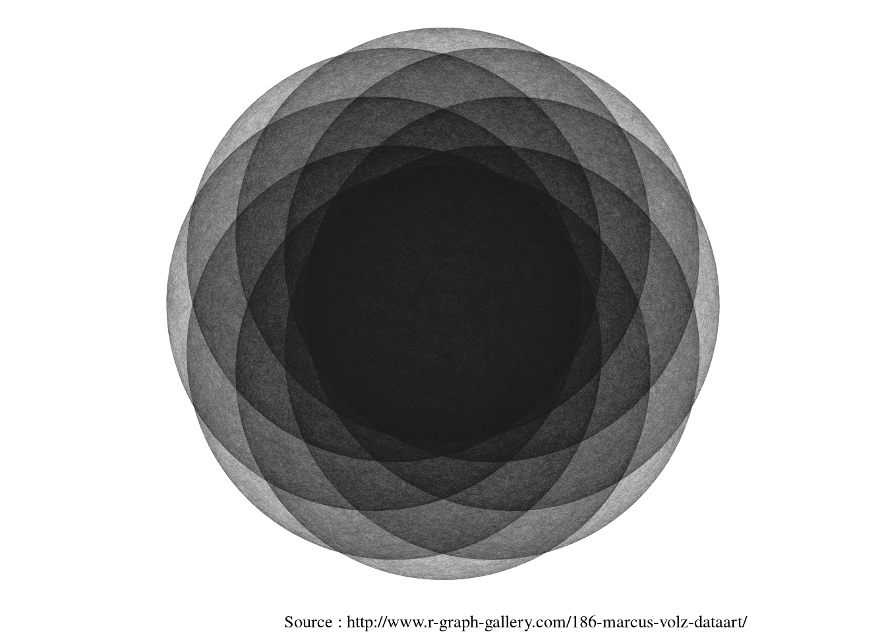
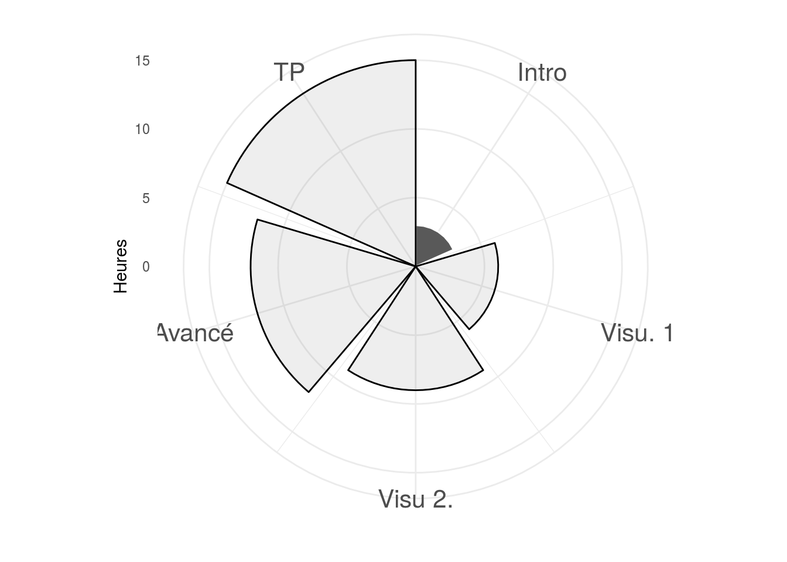
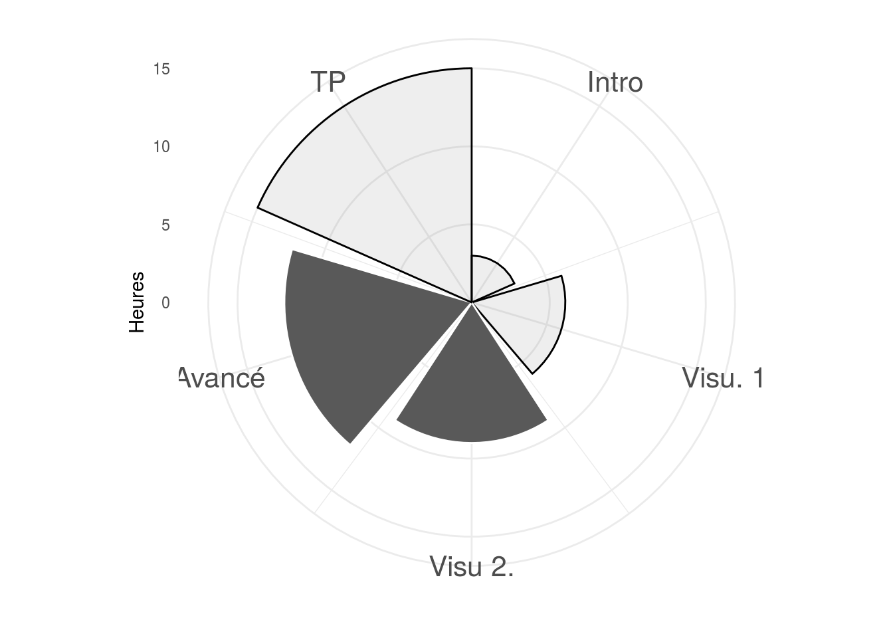
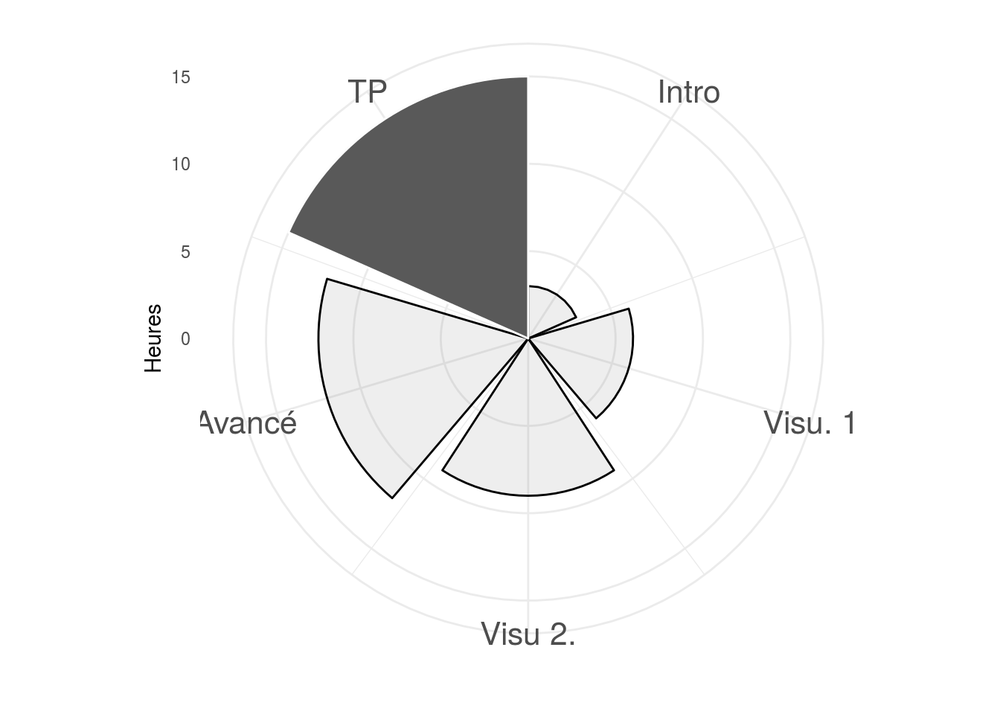

Notes de Cours sur R FIN403
Laurent POLITIS
Le 21 février 2017
Syllabus
Presentation du cours
L’objectif du cours est d’utiliser le langage de programmation statistique R et d’outils en ligne simple afin de mettre en valeur vos résultats d’analyses statistiques. Le cours est constitué d’exemples de codes R et d’exercices que vous appliquerez directement sur votre ordinateur et console R sous cette forme :
library(dplyr)
library(ggplot2)
library(ggthemes)
n <- 20000
a <- 3
set.seed(101)
make_circle <- function(tx, ty) {
data <- data.frame(angle = runif(n, 0, 2 * pi)) %>%
mutate(x = a * cos(angle) + tx, y = a * sin(angle) + ty) %>%
select(x, y)
data2 <- data[sample(nrow(data)),]
data <- bind_cols(data, data2)
names(data) <- c("x1", "y1", "x2", "y2")
data
}
data <- rbind(make_circle(cos(0), sin(0)),
make_circle(cos(pi/4), sin(pi/4)),
make_circle(cos(pi/2), sin(pi/2)),
make_circle(cos(3*pi/4), sin(3*pi/4)),
make_circle(cos(pi), sin(pi)),
make_circle(cos(5*pi/4), sin(5*pi/4)),
make_circle(cos(3*pi/2), sin(3*pi/2)),
make_circle(cos(7*pi/4), sin(7*pi/4)))
ggplot() +
geom_segment(aes(x = x1, xend = x2, y = y1, yend = y2), data %>% filter(x1 != x2),
alpha = 0.15, size = 0.015) +
coord_equal() +
theme_tufte() +
theme(line = element_blank(),
axis.ticks = element_blank(),
axis.ticks.length = unit(0, "null"),
axis.title = element_blank(),
axis.text = element_blank(),
# text = element_blank(),
legend.position = "none",
legend.margin=unit(0, "null"),
panel.background = element_blank(),
panel.border=element_blank(),
panel.grid = element_blank(),
panel.margin=unit(c(0,0,0,0), "null"),
plot.background = element_blank(),
plot.margin=unit(c(0,0,0,0), "null"))+
labs(caption="Source : http://www.r-graph-gallery.com/186-marcus-volz-dataart/")
Plan du cours
Durant ces 15 heures de cours les points abordés sont :
- Prise en main de R (rappel)
- Extraction et manipulation de données
- Data visiualisation graphiques classiques et améliorations avec ggplot2
- Data visiualisation interactives (html widget, plotly …)
- Recherche reproductible (shiny, rmarkdow, )
Dans un premier temps, nous allons découvrir les bases de R afin de savoir comment importer et explorer différentes données sous R. Nous allons apprendre comment préparer les données afin de créer des graphiques et applications interactives. Ces outils acquis durant le cours vous permettront de mettre en valeur vos études ou reportings, qui vous seront utiles dans un contexte académique ou professionnel.
Mode d’évaluation
L’évaluation de ce cours consiste en la création d’un programme R qui formerat un projet informatique de recherche sur la météo sensibilité du flux de vélos en libre service type vélib ou autre. Le projet s’articulera en plusieurs partie :
- Data Mining
- Visualisation des résultats du data mining
- Modélisation
- Visualisation des résultats de la modélisation
- Application interactive

schéma Script R
Thèmes abordés
Présentation du cours et de R
Le vendredi 17 févier 2017

Au début du cours seront présentés le logiciel R.
Un rappel sur l’utilisation de la console et de l’environnement de développement intégré (IDE) R studio sera effectué au début de cette première partie. Des fonctions de base sous R permettant d’importer les données depuis un fichiers texte, csv, excel et même directement depuis le web seront présentées. On examinera comment R stocke les données sous forme de variables, comment les manipuler et de créer des graphiques…
Visualiser ces données

Le 21 février, 14 à 17h45 == 3h45 travaux dirigés
Le but du cours est de continuer à utiliser la libraries GGplot2.
Il existe des graphiques de base qui permettent d’examiner les différents jeux de données et modèles statistiques. Ces graphiques constituent des arguments et des preuves pour mettre en évidence les résultats que vous avancez et leurs pertinences de manière simple et synthétique. Les graphiques que nous allons créer sont entre autres :
- Les boites à moustaches
- Les histogrammes
- Des graphes en coordonnées polaire
Graphiques Interactifs et applications

Le mercredi 22 mars 2017, == 3h travaux dirigés
Nous avons passé en revue différentes manières de présenter nos données sous forme d’illustration statistique. Dans cette partie, les outils de visualisation interactive faisant appel à des librairies codées en java et en html 5 seront présentés (html widget, shiny et r markdown). Les outils comme shiny, r markdown et plotly permettent de créer de véritables petites applications de visualisations et d’applications de vos résultats. Par exemple, le syllabus que vous lisez est entièrement fait sous R à l’aide de r markdown.
Travaux pratiques

== 3h tp
Le but de ce TP est de commencer à travailler sur les données de votre mémoire à l’aide d’un programme R et des notions apprises.
Références et conseils de lecture
Sur la visualisation des données
- http://www.r-bloggers.com/ un blog contenant des articles divers et variés sur les nouveautés R.
- http://vissoc.co/ cours de Data Visualisation avec R et en particulier avec ggplot2
- https://sites.google.com/a/analytics.usfca.edu/msan-622-experimental-design-and-visualization/ cours de data visualisation avec R ggplot2 et shiny
- http://flowingdata.com/ site compilant de très belles illustrations faites en grande partie avec R
- http://www.htmlwidgets.org/
Sur les bases de R
- https://openclassrooms.com/courses/effectuez-vos-etudes-statistiques-avec-r
- http://www.statmethods.net/ pour des exemples rapides en R
- https://www.datacamp.com/ des cours sur R interactifs
Autres
- https://www.kaggle.com/ site de compétitions et de challenges sur des projets de statistique
- http://deanattali.com/shiny/
Remerciement
J’adresse mes remerciements aux personnes qui m’ont aidé dans la réalisation de ce cours.
En premier lieu, je remercie M. Jean Louis Bertrand et Miia Parnaudeau, tous les deux professeurs à l’ESCCA. Ils m’ont donné l’occasion d’enseigner et de partager mes connaissances sur R.
Je remercie aussi M.Arthur ROUSSEAU et Samia, qui m’ont aidé respectivement pour les questions informatique et administrative.
Enfin je remercie les etudiants pour leurs attention et leurs feedbacks, qu’ils appportent aux cours.